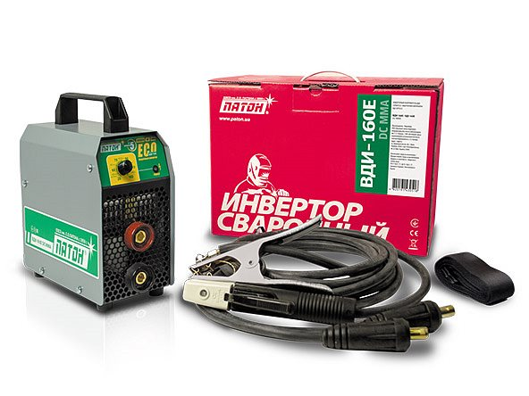
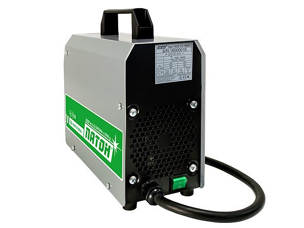

Выпрямитель сварочный инверторный Патон ВДИ-160E DC MMA
Инверторный выпрямитель ПАТОН ВДИ-160E DC MMA предназначен для ручной дуговой сварки (РДС). Разработан конструкторско-технологическим отделом ОЗСО с учетом нынешних тенденций в экономике страны. Данный аппарат создан с применением двух ключевых принципов: ЭКОЛОГИЧНОСТЬ и ЭКОНОМИЧНОСТЬ.
 Ключевым преимуществом ПАТОН ВДИ-160E DC MMA является сочетанием малых массо-габаритных параметров (4,2кг) и достаточно высоких сварочных характеристик (I2ном-160А, ПН-40%).
Стоит отметить: заявленные в технической инструкции сварочные параметры полностью соответствуют реальным рабочим параметрам аппарата, что определяется использованием высококачественных электронных компонентов и тщательным контролем на каждом производственном этапе.
Назначение:
- решение бытовых задач (сварка: металлических труб /вода, газ/, дымоходов и водостоков из нержавеющих сталей, металлических петель, листов профнастила)
- обустройство территорий дачных участков и жилых домов (теплицы, навесы, беседки, заборы)
- частное строительство и использование профессиональными строительными бригадами при малом строительстве (коттеджи, гаражи, торговые павильоны, ларьки)
Свойства и преимущества:
- осуществление сварки с использование широкого ряда покрытых электродов - АНО, УОНИ, ЦЛ, ОЗЛ и др.
- экономное потребление электроэнергии при сварке - 4,4КВа
- блок защиты от пониженного и повышенного напряжения - продлевает срок эксплуатации аппарата
- работа со слабыми электросетями - минимальная просадка питающей сети
- просты в использовании - включи и вари
- электроника надёжно защищена от воздействия пыли и повышенной влажности.
Комплектация ВДИ-160E DC MMA:
- Источник питания сварочной дуги с сетевым кабелем 2м. - 1шт.
- Ремень для переноски на плече - 1шт.
- Фирменный гофрокороб «Патон» - 1шт.
- Кабель сварочный с электрододержателем 3м - 1шт.
- Кабель сварочный с клеммой «массы» 3м.- 1шт.
- Инструкция по эксплуатации - 1 шт.
| Положение сварки: | Диаметр электрода, мм. | ||
|---|---|---|---|
| ø3,0 | ø 4,0 | ø 5,0 | |
| Сварочный ток, А: | |||
| Нижнее/Потолочное | 80-120/80-110 | 140-180/130-160 | 180-240/- |
| Вертикальное | 80-110 | 130-140 | 170-230 |